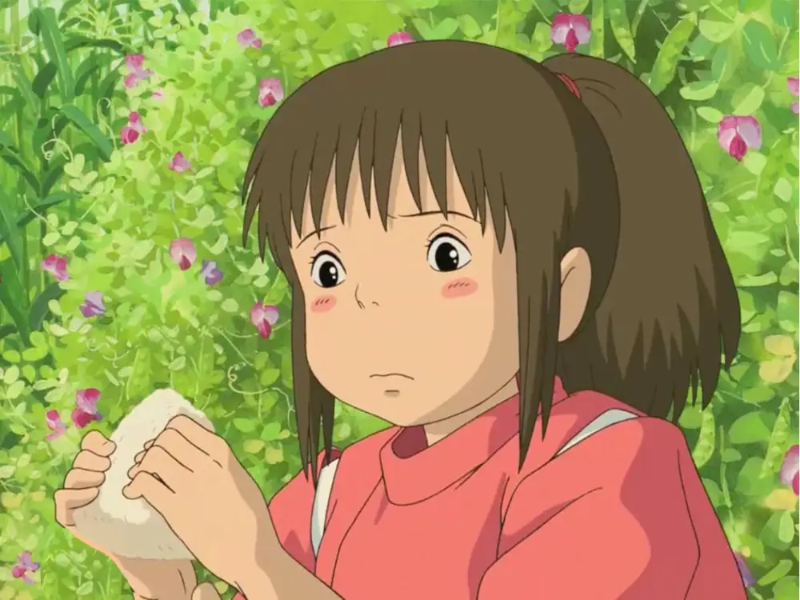

Chihiro's Onigiri

Description
Onigiri is a Japanese dish, typically consisting of rice, nori (seaweed), and some sort of filling. There are many variations of onigiri, but this one will be fairly simple with a tuna-mayo filling. This recipe was inspired by Studio Ghibli's Spirited Away, although the onigiri seen in the movie appeared to simply consist of rice. We'll make this onigiri a little more appetizing with a couple simple additions.
Ingredients
- 6 mini sheets of nori (seaweed)
- One can of tuna
- Mayonnaise
- 6 cups cooked sticky rice, lukewarm
- An onigiri mold (optional)
Steps
- Slice your nori sheets into your desired length, as you'll be wrapping these around your onigiri later.
- Combine tuna and mayonnaise to taste.
- Take your lukewarm rice and press it into the onigiri mold (or your hands if not using a mold), leaving room for the filling.
- Insert desired amount of filling.
- Add additional rice to cover, and then press to form onigiri shape.
- Wrap in onigiri strips.
- Enjoy!